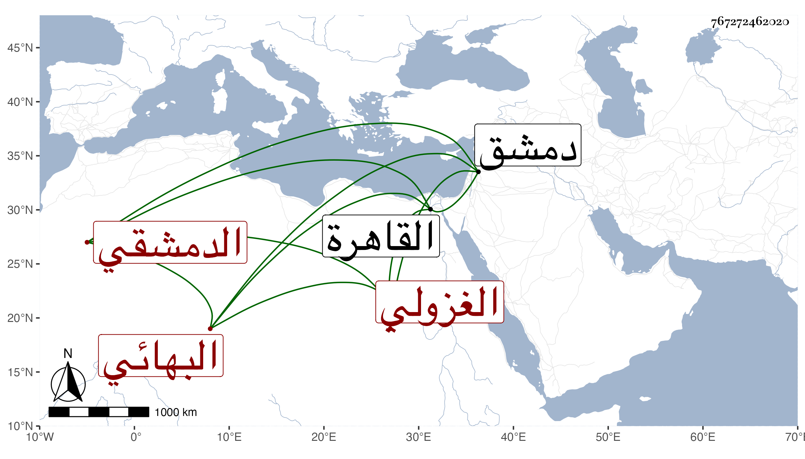

0902Sakhawi.DawLamic.ITO20230111-ara1.EIS1600.767272462020
Biography ID: 767272462020
855
علي بن عبد الله البهائي الدمشقي الغزولي . قال شيخنا في معجمه كان مملوكا تركيا اشتراه بهاء الدين فنشأ ذكيا وأحب الأدبيات فلازم العز الموصلي فتخرج به وقدم القاهرة مرارا وكان جيد الذوق محبا في أصحابه أخذ عن ابن خطيب داريا وابن مكانس والدماميني وغيرهم ، وجمع في الأدب كتابا سماه مطالع البدور في منازل السرور في ثلاث مجلدات وتعانى النظم فلم يزل يقوم ويقعد إلى أن جاد شعره ولكن لم يطل عمره . ومات بدمشق سنة خمس عشرة سمعت منه قليلا من نظمه وكتب عني الكثير ونظمت كثيرا باقتراحه . وفيه يقول أبو بكر المنجم في زجل هجاه به :
| يسمع جيد ويفهم | لكن ما يقول شي |
وهو عند المقريزي في عقوده .
